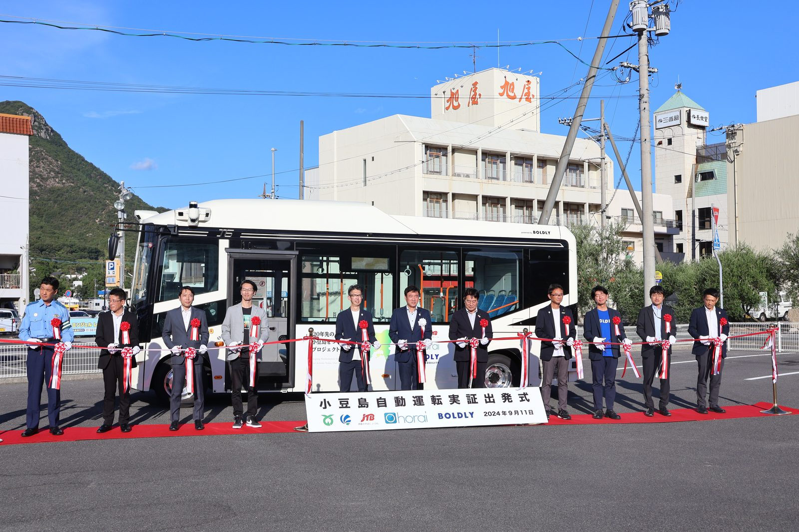
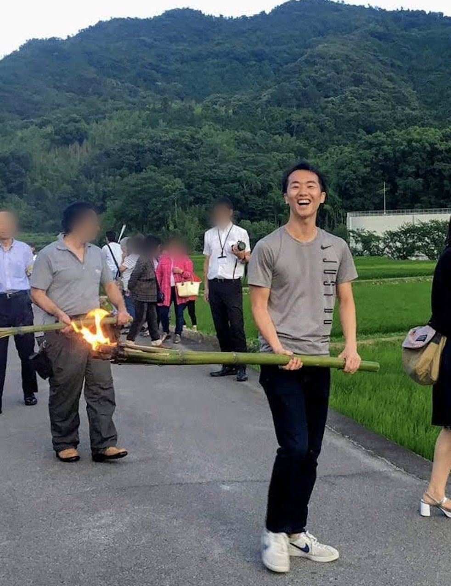
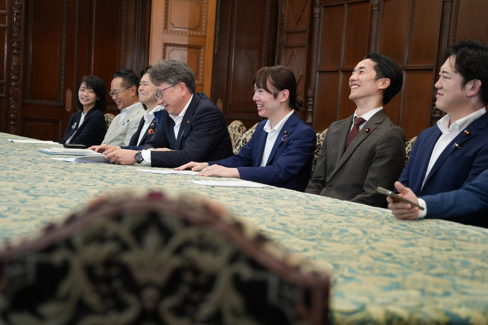
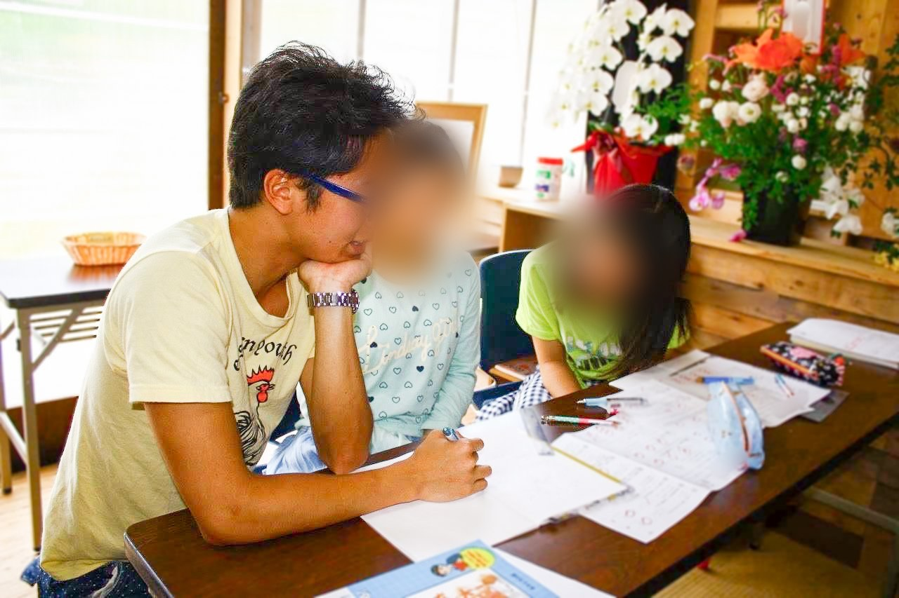
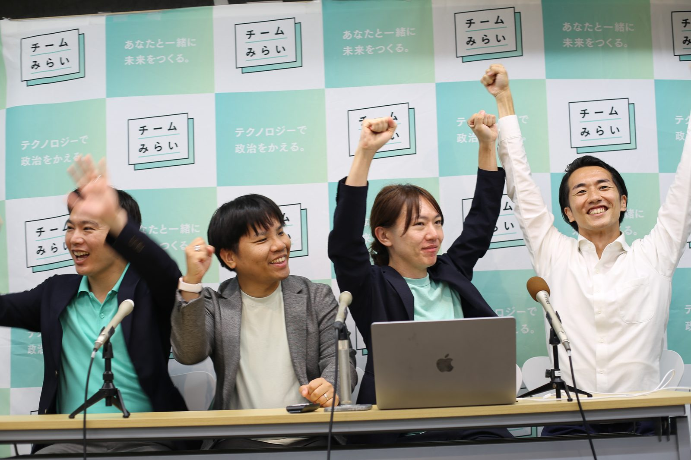
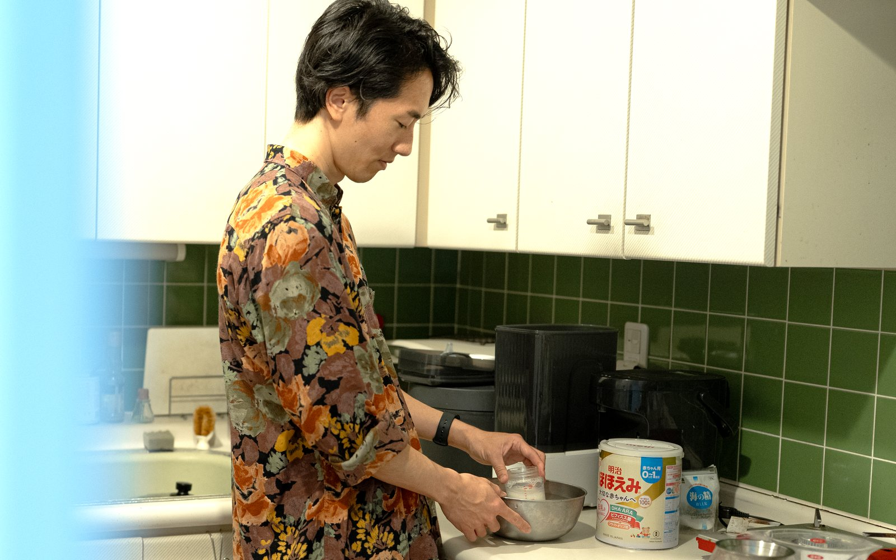
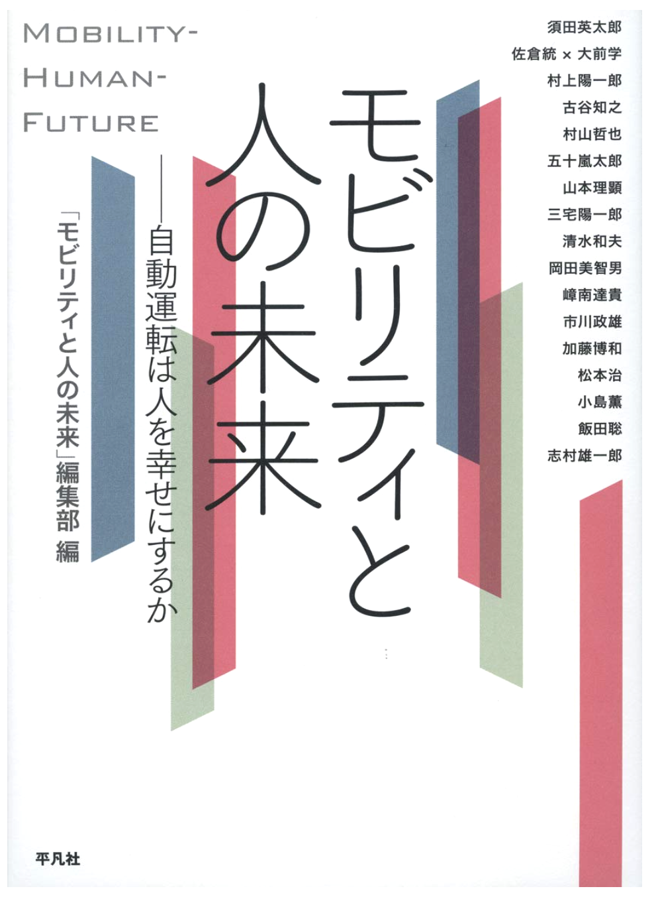
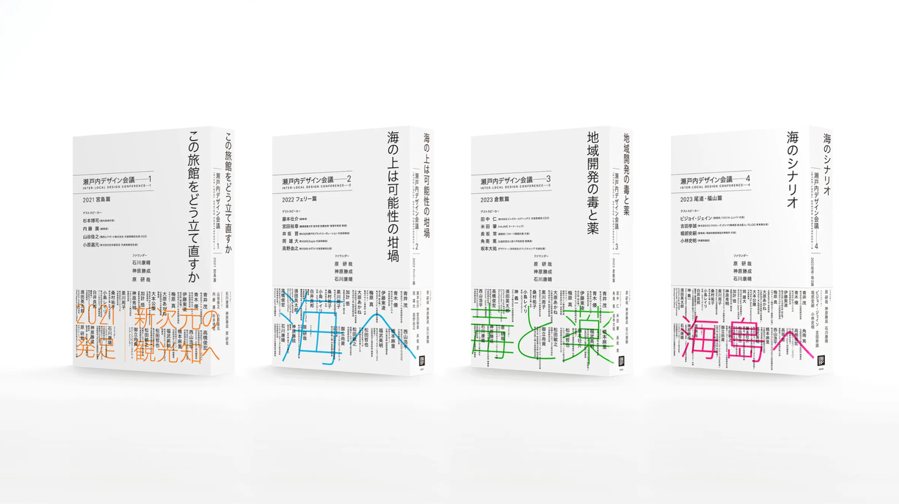

I spent six years getting autonomous buses onto the roads of a small island in the Seto Inland Sea before I ever sat in a committee room. That order matters: I know what it takes to turn a demonstration into a service a town can depend on, and how often the obstacle is a rule rather than the technology.
One pillar keeps a place functioning. One makes it worth being in. One is about how both get decided.

Japan is one of the first major countries to face the full challenges of an ageing and shrinking population. What we get right or wrong here could offer important lessons to other countries in the decades ahead. In 2025, 435,000 people gave up their driving licences, six in ten of them over 75. Bus and taxi operators cannot find drivers to replace the ones retiring, and about 2,500 kilometres of bus route were withdrawn in the 2023 financial year alone.
The answer cannot be more drivers. It has to be technology that lets fewer people run the same service. From 2018 I was based on Shodoshima, an island in the Seto Inland Sea, and it took six years to get an autonomous bus onto its roads. Five of my first nine sessions of questioning in the Diet dealt with autonomous driving, and at sea I pressed the government into saying, for the first time, that investment in automated vessel operation should be reflected in freight rates.
The head of the island's women's association told me she was more frightened of the island disappearing than of a self-driving bus crashing. Used well, technology keeps a place alive.

AI will take over a growing share of what we do for work. When work is no longer the centre of a life, what fills it is culture, and culture grows out of particular ground. Each region is still making a culture that exists nowhere else. That is a resource, and not one that can be manufactured anywhere else.
Before politics I built the digital systems behind the Setouchi Triennale, an art festival spread across the islands of the Inland Sea. I worked with the Toyooka Theatre Festival, using app and tag data to find which buses its audiences actually took, and with RENEW in Echizen, where workshops open their doors and visitors watch things being made. All three bring in visitors and keep a craft alive at the same time; neither half works without the other.
A region that empties out does not only lose its people. It loses a way of making things, of seeing them, of enjoying the world, that existed nowhere else and that no policy will bring back.

In Myanmar I studied alongside students who could not read freely about the politics of their own country. I came home to a democracy where people of my own generation felt that politics had little to do with them. At the 2014 general election, turnout among people in their twenties was 33 per cent, against 53 per cent overall. Part of the reason is that it is hard to see your own view making any difference to what gets decided.
AI changes what is possible here. It can take in a large number of individual accounts and show what is in them without reducing everything to a few lines. My party's platform is an open repository anyone can propose a change to. Some of the accounts behind my committee questions came from AI-run interviews with people working in the industries concerned.
In October 2025 I set up a cross-party study group on AI and democracy, with Audrey Tang as our first guest. The joint proposal on strengthening the legislature came out of it, agreed by seven parties in July 2026 and handed to the Speakers of both houses.
Questions I have put to ministers and officials at the Committee on Land, Infrastructure, Transport and Tourism and the Special Committee on Disaster Countermeasures. Each links to the full record, in Japanese; machine translation handles it well enough.

At the end of my first year at university the Tohoku earthquake struck. I kept going back over the years that followed, clearing mud from a cannery in Ishinomaki and helping children with their schoolwork in Minamisanriku. What people said to me there, over and over, was that the television crews had stopped coming and the problem had not gone away.
I read cultural anthropology and science and technology studies at the University of Tokyo.


Before politics I edited a specialist publication on the policy questions raised by autonomous driving.


I am glad to hear from journalists, including for background before a piece is written, and from conference organisers. If you are a legislator, official, company or researcher working on the same questions, what I can usually be most useful for is how the Japanese regulatory picture fits together and which part of government decides what. I am happy to meet people passing through Tokyo.
The form below is labelled in Japanese; messages in English are welcome. I am not always able to reply to every enquiry individually.
Open the contact formEitaro Suda is a member of Japan's House of Representatives, elected in 2026 for Team Mirai, a party that uses AI and open-source tools to widen public participation in policy-making. He works on transport and infrastructure in a depopulating Japan, on culture as regional policy, and on digital democracy. He previously co-founded an urban-technology company that spent six years getting autonomous buses running on a rural island.